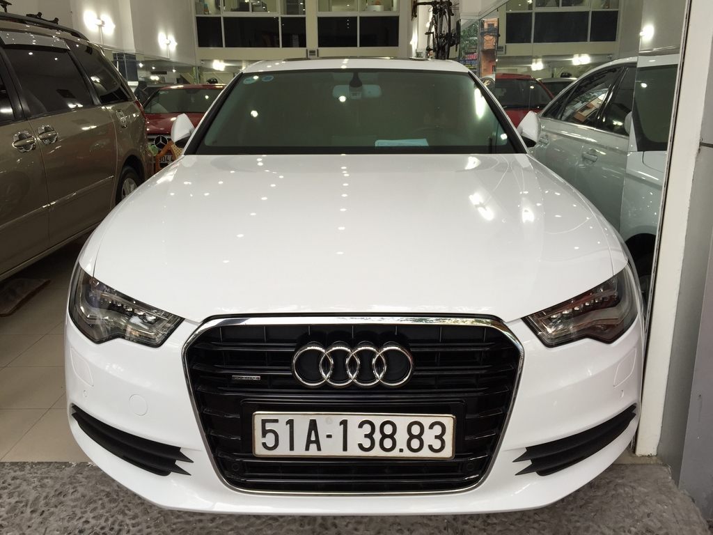

Học lập trình web

Anh Thế Long, sinh sống tại Hà Nội,
cho biết thấy bất ngờ khi được cấp biển số có 2
chữ cái "AB" chiếc xe máy mới. "Mình đăng ký chiếc
xe tay ga Honda Vision có dung tích trên 110 phân khối
nhưng không hiểu sao ra biển lại có hai chữ cái này. Nó
vốn dành cho xe dưới 50cc mà?", anh thắc mắc.